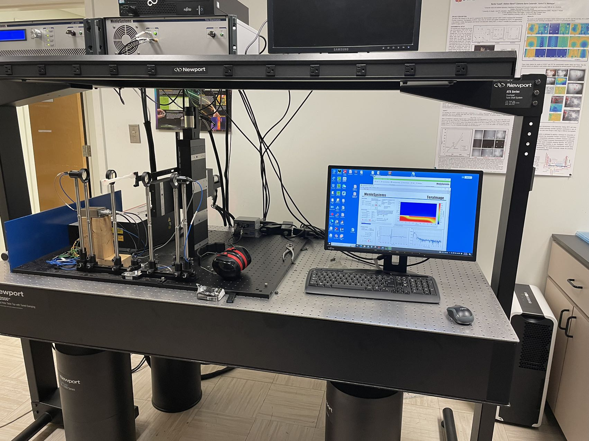

I am Pengfei Zhu, a PhD student in MIVIM (Lab of Canada Research Chair) and LVSN, Université Laval, Quebec, Canada. My research interest includes InfRared Thermography, TeraHertz Time-Domain Spectroscopy, Photothermal Coherence Tomography, Non-Destructive Testing, Deep Learning, and Image Processing. I am also the reviewer of Quantitative Infrared Thermography Journal, Measurement, Optics Express, Applied Optics, Infrared Physics & Technology, etc.
Now I am working with Prof. Xavier Maldague (Supervisor) and Prof. Hai Zhang (Co-Supervisor) .

Education
2015-2019: Bachelor of Engineering, Engineering Mechanics, School of Aeronautics and Astronautics, the North University of China, China
2019-2022: Master of Engineering, Mechanics, Faculty of Mechanical Engineering & Mechanics, Ningbo Univeristy, China
2022-Now: Doctoral student, Electrical Engineering, Faculté des sciences et de génie, Université Laval, Canada
[14] Pengfei Zhu, Hai Zhang*, Carlo Santulli, Stefano Sfarra, Rubén Usamentiaga, Vladimir P Vavilov, Xavier Maldague. Contactless and nondestructive evaluation of residual stress distribution in modified and pure HDPE materials using a novel terahertz method and line-scan thermographic technique. Compos. Part A-Appl. S. 183 (2024) 108220. [Link]
[13] Pengfei Zhu, Hai Zhang*, François Robitaille*, Xavier Maldague. Terahertz time-domain spectroscopy for the inspection of dry fibre preforms. NDT & E Int. 145 (2024) 103133. [Link]
[12] Guimin Jiang1, Pengfei Zhu1, Yonggang Gai, Tingyi Jiang, Dazhi Yang, Stefano Sfarra, Thomas Waschkies, Ahmad Osman, Henrique Fernandes, Nicolas P Avdelidis, Xavier Maldague, Hai Zhang*. Non-invasive inspection for a hand-bound book of the 19th century: Numerical simulations and experimental analysis of infrared, terahertz, and ultrasonic methods. Infrared Phys. Techn. 140 (2024) 105353. [Link]
[11] Pengfei Zhu, Hai Zhang*, Stefano Sfarra, Fabrizio Sarasini, Rubén Usamentiaga, Vladimir Vavilov, Clemente Ibarra-Castanedo, Xavier Maldague. Enhancing resistance to low-velocity impact of electrospun-manufactured interlayer-strengthened CFRP by using infrared thermography. NDT & E Int. 144 (2024) 103083. [Link]
[10] Pengfei Zhu, Rongbang Wang, Stefano Sfarra, Vladimir Vavilov, Xavier Maldague, Hai Zhang*. A novel force-temperature model for evaluating internal forces in CFRP by means of infrared thermography. NDT & E Int. 143 (2024) 103066. [Link]
[9] Pengfei Zhu, Hai Zhang*, Elena Pivarčiová, Stefano Sfarra, Xavier Maldague. The Detection of Moisture Content and the Delamination of Thermally Modified Woods Based on Terahertz Time-Domain Spectroscopy. Engineering Proceedings 51 (2023) 37. [Link]
[8] Pengfei Zhu, Hai Zhang*, Carlo Santulli, Stefano Sfarra, Xavier Maldague. Evaluation of Residual Stress in Modified and Pure HDPE Materials Based on Thermal Diffusivity and Terahertz Phase Spectroscopy. Engineering Proceedings 51 (2023) 33. [Link]
[7] Pengfei Zhu, Hai Zhang*, Elena Pivarčiová, Stefano Sfarra, Xavier Maldague. Characterization of water content and inspection of delamination in spruce, oak and meranti woods after pyrolysis processing using a new terahertz time-domain spectroscopy method. NDT & E Int. 139 (2023) 102938. [Link]
[6] P. Zhu, Z. Wei, O. Zahra, G. Marchais, P. Servais, T. Boulanger, X. Maldague*. Automated Defect Detection for Epoxy-Carbon Prepreg Laminates in Data Fusion Approach. Conference of QIRT ASIA 2023. [Link]
[5] Pengfei Zhu, Dan Wu*, Yifan Wang, Zhifei Miao. Defect detectability based on square wave lock-in thermography. Appl. Opt. 61 (2022) 6134-6143. [Link]
[4] Pengfei Zhu, Dan Wu*, Lei Qian. Detection of defects in metallic materials using an improved post-processing method of pulsed thermography. Opt. Laser. Eng. 151 (2022) 106927. [Link]
[3] Pengfei Zhu, Dan Wu*, Lingxiao Yin, Wei Han. Quantitative detection of defect size based on infrared thermography: temperature integral method. Opt. Express 30 (2022) 9119-9136. [Link]
[2] D. Wu*, L. Qian, P.F. Zhu. A novel micro-tensile system for full-field deformation measurement of thin films. Rev. Sci. Instrum. 92 (2021) 093901. [Link]
[1] Dan Wu*, Lei Qian, Pengfei Zhu. The distortion elimination of an optical microscope based on optimized windowed Fourier transform. Precis. Eng. 70 (2021) 124-134. [Link]
Applications
A. Photothermal Coherence Tomography
Impact damage evaluation
Quantitative Defect Detection
Awards
2023, Excellent Thesis of Zhejiang Province, China
2022, Fellowship of oN DuTy Program, NSERC, Canada
2022, China Scholarship Council scholarships
2021-2022, Excellent Graduate, Excellent Thesis, Future Star, Research Star of Ningbo University [Link]
2021-2022, The First Prize of Academic Level Scholarship, Cao Guangbiao Scholarship, Wang Yajuan Scholarship, Excellent Scholarship of Ningbo University
2020, The Second Prize of the 17th China Post-Graduate Mathematical Contest in Modeling